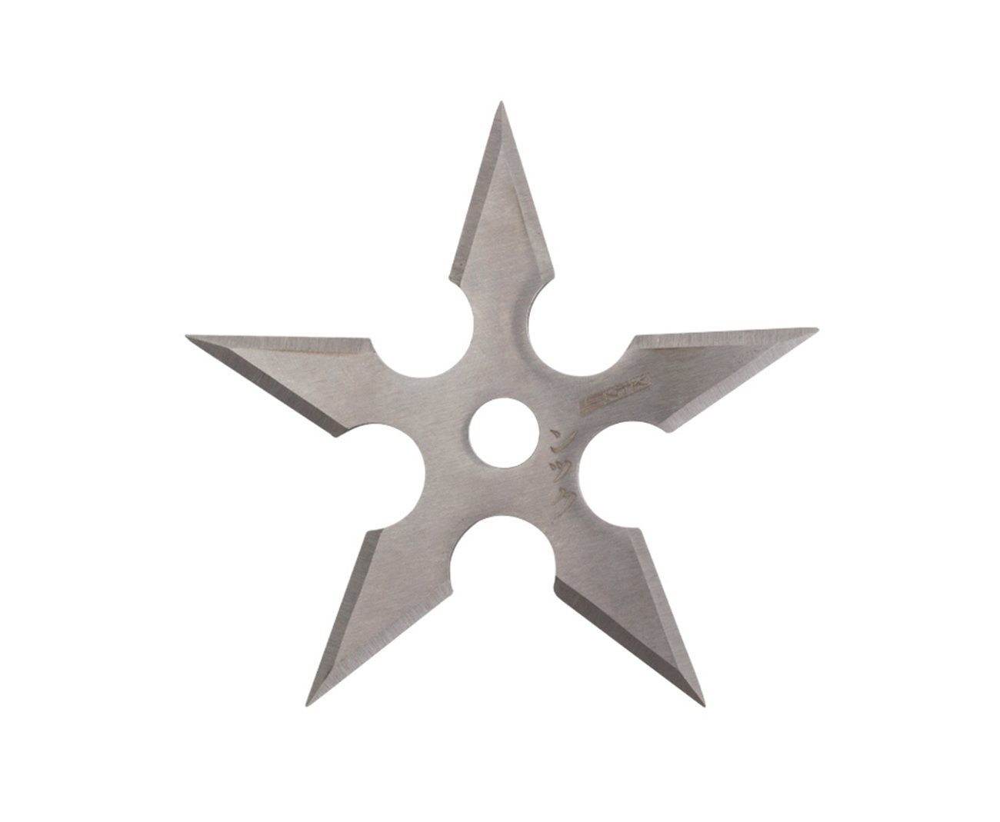

Shuriken

Shuriken (a lâmina que se atira) é uma arma de arremesso de origem japonesa e está entre as 18 disciplinas do Ninjutsu, no Shuriken Jutsu. São divididas em: Bo Shuriken e Hira Shuriken, onde são classificadas de acordo com o grupo, número de pontas e formato.